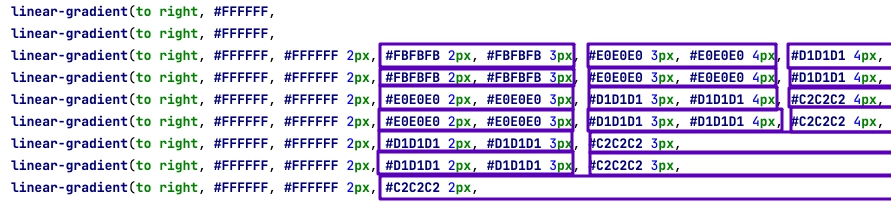

This is CSS only solution for scrollbar customization. This works a lot much smoother than JS solution so it can be used in areas where JS doesn't work well.
See example:
This solution is based on ::-webkit-scrollbar and ::-webkit-scrollbar-thumb pseudo elements so it is greatly limited. See documentation.
For example one of the limitations is that width of thumb must be equal to the width of scrollbar. So we can't add any spacing around thumb, and we can't make it asymmetric. Also it always takes some spacing on the page and can't fly over content.
The trick here is to do a pixel art on scrollbar using precise gradients. Notice this zoomed image. We use 4 different shades of gray:
Each of these shades at the corner drawn by an extra layer of the gradient:

This solution is coded inside of (min-width: 768px) media query. It will only works in desktop browsers which is intentional. On smartphones we don't have issues with scrollbars at all.
Notice that this solution is based on custom properties with webkit prefix in it. So it works in webkit browser only (Edge included). Firefox won't get this code.
The best we can do for firefox is to use new scrollbar-color property which is still better than nothing. But keep in mind some other tricks below won't work in Firefox.
It's important to keep sizes of this scroll in mind. Scrollbar width is 11px and thumb width is 7px.
Because this scrollbar takes 11px of page spacing it shouldn't be used in columns where content is centered.
Neither it will look good in the columns where content uses background because this scrollbar must have white background.
But it fit perfectly into textareas: